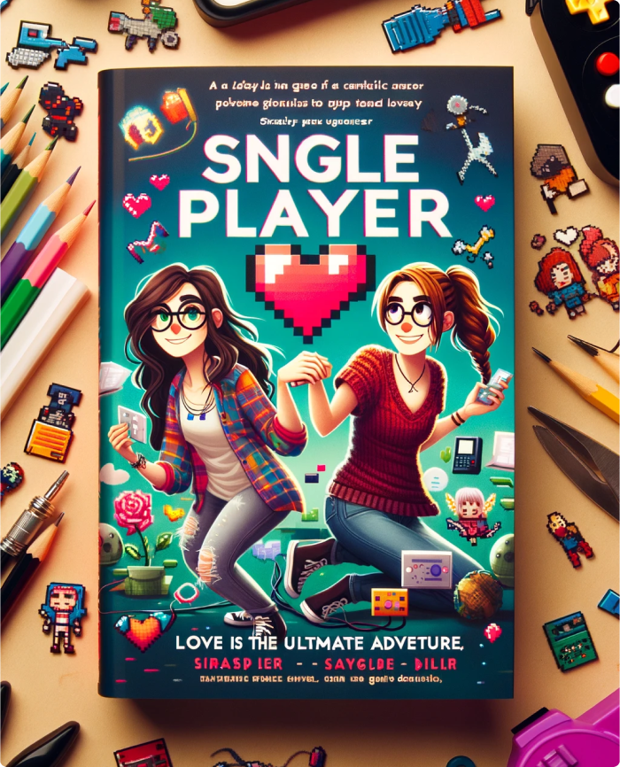

Single Player
Charming, witty, and surprisingly poignant. Alex and Jordan's journey is not one to be missed!
Single Player is a heartwarming journey into the world of game development where rivalry turns to romance.
In this delightful romantic comedy, readers meet two spirited game developers, Alex and Jordan, who initially clash over their contrasting game design philosophies. Alex, with her imaginative and unconventional ideas, often finds herself at odds with Jordan, a by-the-books programmer who values structure and efficiency. Set against the backdrop of a bustling game studio, their story is a refreshing take on the complexities of modern love and the quirky world of video game creation. As deadlines loom and pressure mounts, these two talented developers discover that they have more in common than they thought, leading to sparks of both frustration and affection.
As the narrative unfolds, "Single Player" cleverly intertwines the exhilarating highs and lows of game development with the unpredictable path of love. With witty dialogue, humorous scenarios, and a cast of colorful supporting characters, the book is a testament to the unexpected ways in which love can blossom. As Alex and Jordan navigate their professional challenges, they also embark on a personal journey of understanding and acceptance. Their story is a reminder that sometimes, the most rewarding collaborations come from the most unlikely partnerships. Perfect for fans of romantic comedies and gaming culture, "Single Player" offers a unique blend of laughter, passion, and the magic of finding love where you least expect it.
Buy the book
Buy local in Boston: Brookline Booksmith, Harvard Bookstore
Buy online: Amazon, Barnes & Noble, Books-A-Million, Powell’s, IndieBound
An irresistible blend of humor and heart. 'Single Player' hits all the right notes in the symphony of love and games.
A masterclass in romantic comedy. This book will make you laugh, cry, and fall in love with love all over again.
Brilliantly captures the spirit of modern romance amidst the intriguing backdrop of video game development. A must-read!